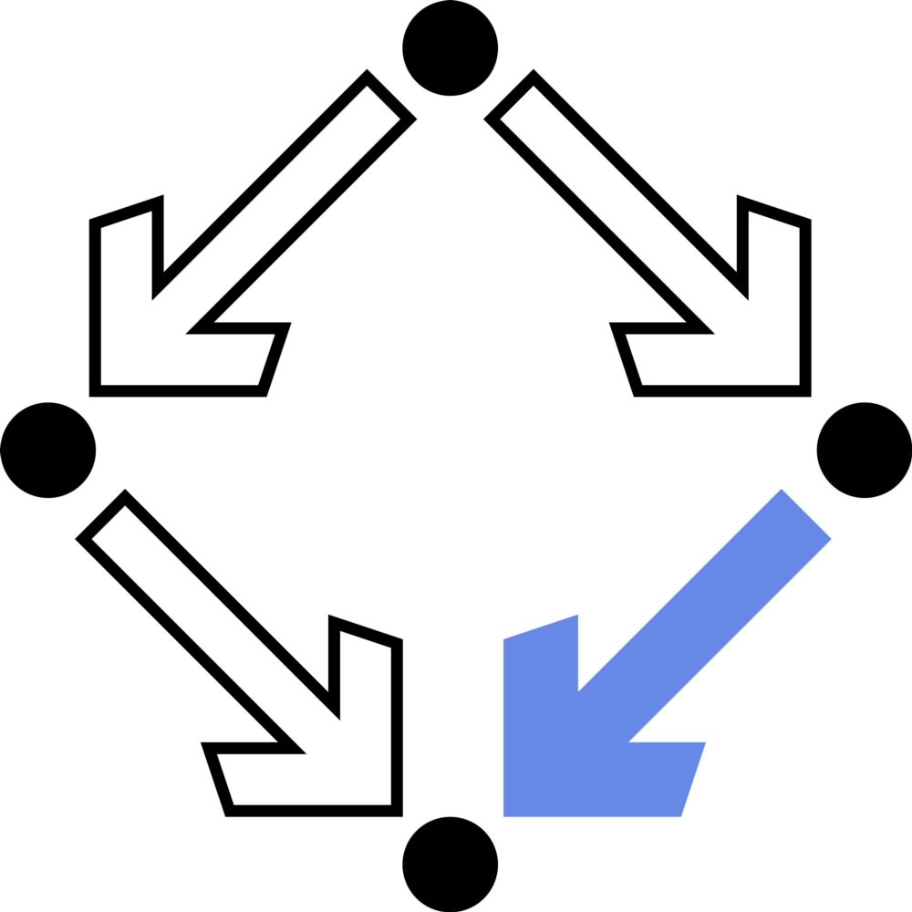

|
Welcome to Yi Zhang's Homepage |
 |
| 09/2013 -- 02/2017 | Ph.D.* in Mathematics with distinction, Institute for Algebra, Johannes Kepler University Linz, Austria (Co-supervisors: Prof. Manuel Kauers and Prof. Ziming Li). |
| 09/2011 -- 07/2016 | Ph.D. in Applied Mathematics, Key Laboratory of Mathematics Mechanization, AMSS, University of Chinese Academy of Sciences, Beijing, China (Co-supervisors: Prof. Manuel Kauers and Prof. Ziming Li). |
| 09/2007 -- 07/2011 | B.Sc. in Mathematics, School of Mathematical Sciences, Soochow University, Soochow, China. |
| 03/2017 -- now | Postdoc researcher in Johann Radon Institute for Computational and Applied Mathematics (RICAM), Austrian Acedemy of Sciences, Austria. (Supervisor: Dr. Christoph Koutschan) |
| May 2017 | Visiting scholar at Department of Mathematics, Kobe University, Japan. (Host researcher: Prof. Nobuki Takayama) |
| PGP pubic key | 1E80 387F F918 7028 C570 6CCB 3E57 3B5E A346 4A0C |
| sMail | Dr. Yi Zhang Johann Radon Institute for Computational and Applied Mathematics (RICAM) Austrian Academy of Sciences Altenbergerstraße 69 A-4040 Linz, Austria |
| Office | S2 0435 (Science Park II) |
| Phone | +43 732 2468 5235 |